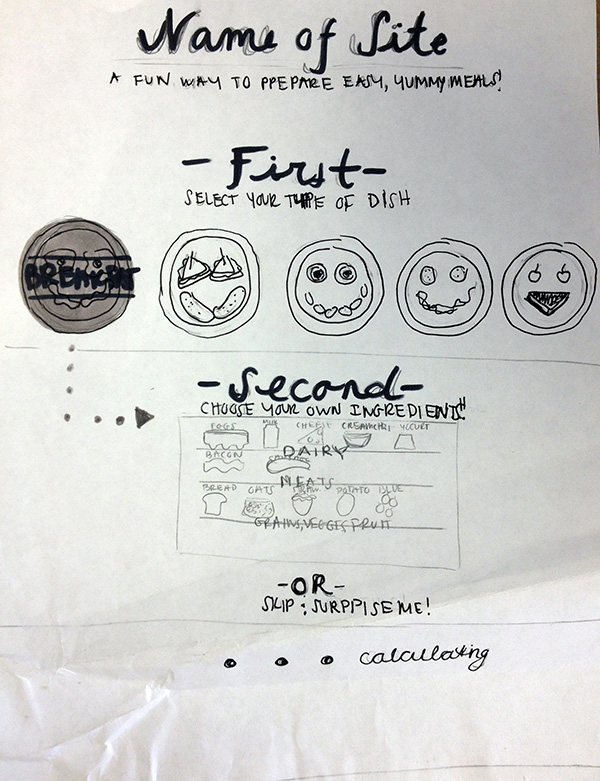
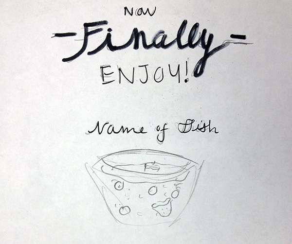
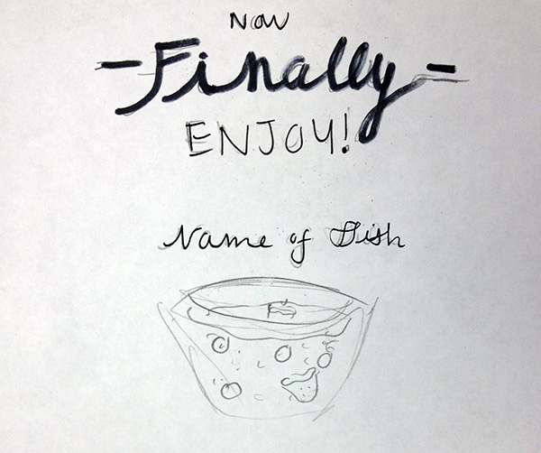
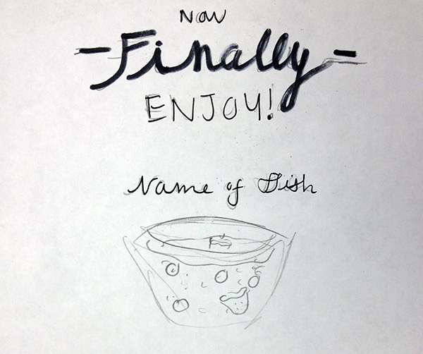

Sketches
 

Looking for new recipes on the web is fun. The possibilities are accessible and endless. But what the web really needs is a fun, interactive way to find recipes and prepare them. My interactive web page would be a new, fun way for college students (or anyone with a low budget/low cooking skill) to select the ingredients that they already have or can easily buy and make a delicious meal out of! The preparation and cooking of the meal wouldn't be as boring as a bulleted list, but a step-by-step, animated instructional process!
My interactive site would start off with users selecting what kind of dish they would like to prepare (Breakfast, Lunch, Snack, Dinner, Dessert) and then ingredients from different food groups out of a pantry or grocery store style shelving unit. The food groups would include meats, veggies and fruits, dairy products, grains, etc. Then different dishes would pop up depending on what dish/ingredients they have selected. Then the user can pick a dish and drops down a step-by-step instructional animation on how to prepare the dish. The target audience will be college students or anyone who can afford the basics and wants to cook simple, easy meals.
